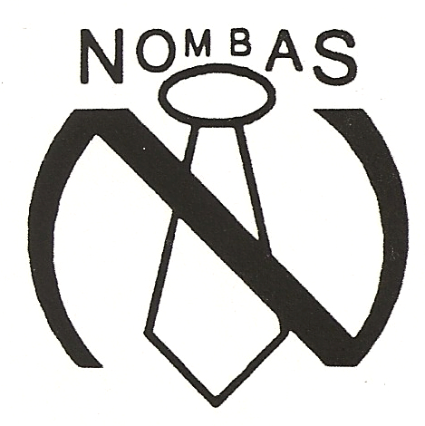

The first Nombas logo
This was the first company logo, made up very quickly when the first order came in
for the first version of the shareware product, CEnvi.

Actually, the earliest logo also included this text at the bottom: "No Ties, No Lies",
but I could find no copies of that one. I scanned the above logo from a cover of the
version 1.009 version of CEnvi, released in 1994.